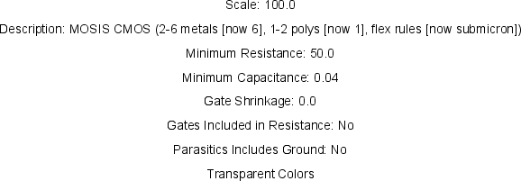

Ячейка Поддержки
Каждая ячейка в библиотеке технологии описывает различный аспект технологии.
Ячейка support содержит информацию по всей технологии.
Чтобы увидеть это, редактируйте ячейку "factors" под секцией "TECHNOLOGY SUPPORT"
ячейки explorer.

Ячейка поддержки содержит много пунктов, любой из которых может быть изменен, щелкая два раза на нем.
- "Scale" является фактором вычисления между единицами сетки и миллимикронами.
- "Description" является полным описанием технологии.
- "Minimum Resistance" является минимальным сопротивлением для технологии
(см Section 9-10-1 для того чтобы узнать больше).
- "Minimum Capacitance" является минимальной емкостью для технологии.
- "Gate Shrinkage" является сокращением затвора для технологии.
- "Gates Included in Resistance" говорит, включить ли затвор транзистора в вычисления сопротивления.
- "Parasitics Includes Ground" говорит, включить ли сети земли в паразитные вычисления.
Прозрачные Цвета
|
Щелкните два раза на пункте "Transparent Colors" для того чтобы выбрать прозрачные цвета.
Вы должны определить такое же количество цветов, которое Вы использовали в слоях.
|  |
Правила Проекта
К сожалению, не возможно редактировать правила проекта, связанные с технологией.